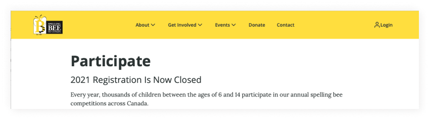
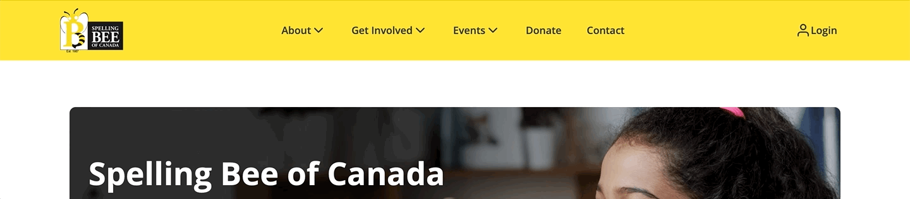
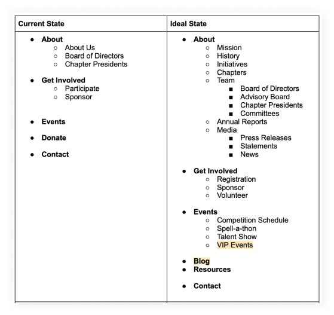

UX Research, Information Architecture, Interaction Design, UI Design
I was 8 when I participated in my first Spelling Bee of Canada, so it felt full-circle when I became a volunteer designer with them. Once we collected feedback after the launch of our MVP redesign, it was time to turn our design thinking caps to elevating the experience and visuals of the navigation.
In a discovery interview with the client, I learned that our current navigation had the following problems:
No scalability potential
On the roadmap was the goal to expand the website’s pages and release more resources and features for the target audience of parents and competitors. We needed to consider how the new navigational items should be organized on the site’s information architecture.
Unintuitive information architecture
After the launch, parents indicated that they were having difficulty with a direct business goal: registration. They were used to the old website’s information architure where the text link, “registration” was located in the menu. They didn’t think the registration link would be in “Participate”. The current site had it 2-levels lower, with the link hidden on page. This resulted in a lot of support emails and parental frustration.
Poor interaction design
Simply put, people expressed difficulty seeing what items were in an “active” state. The only indicator provided when a parent hovered over an item was the switching of the chevron icon. The red line at the bottom of the nav was hidden by the dropdown menu.
Role: Solo product designer
Timeline: 6 weeks
Tools:
Process:
Working with the stakeholder, we discussed what she envisioned and had planned in the roadmap for www.spellingbeeofcanada.ca. Having an idea of how big we wanted the website to grow to helped me tailor my research towards more complex navigation designs, which eventually led to the discovery of mega menus. According to the NNGroup, it showed multiple levels of the site’s information architecture in a single view and the user would be able to see and learn the categorical relationships, rather than exert mental effort to try to remember.
Through my research, I found that designing a stellar navigation takes more than just familiar design patterns and interactions. From a content perspective, it also helps to use information-carrying words. The goal was having our parents come to the website and have a general idea of what each word in the navigation means.
Information carrying-word:
Because parents were confused with the current information architecture, I decided to run a card sorting activity. The goal was to discover how they would think about and group the items in the ideal navigation state.
Participants: 9
Duration: 4 days
Items that were grouped together a minimum of 55% of the time were interpreted to be categorized together in the navigation. Items that didn’t have any groupings of 55% of higher were grouped together with the next highest percentage. In the image above, the different colored rectangles represent different groupings.
More differentiation in the interaction
I added a blue line when the item was in an “active and hover” state. The blue, being used elsewhere on the site, provided enough contrast against the yellow background while still complementing the color. The dropdown was mvoed to appear below the line, a common design pattern found in my research. The same interaction was brough to the sub-navigation items where on hover, the blue line would appear and there was a thickness in font weight.
3-column approach
A matter of priorities occurred here. I tried to have 2-columns in each dropdown for visual balance throughout the navigation, but given the purpose around “media”, it was better categorized under “About”. I made the decision to prioritize the information architecture.
Icon usage
Aside from the seriousness of the spelling bee competitions, we wanted the website to also appear friendly to anybody who landed on it. To break up the text and add a friendly element, I opted for icons that matched the category names.
Thoughtful content
I led with words that our target audience were either familiar with from other sites (e.g. about, contact) and words they would've heard frequently from interacting with the non-profit.
Rather than limiting my search to mega menus and responsive design, I went back a step to the original purpose of why we even started using the mega menu: we wanted to support more navigation items. I started researching how tablet and mobile designs were handling navigations with a lot of items. That's when I discovered the sequential menu.

The design stayed consistent with the mega menu’s goal of establishing a clear visual hierarchy and relationship between the sub-items. The only con was the user would need to click through different navigation items to find something specific.
The final designs:
The navigation is currently being developed by our team at SBOC. I plan to use Google Analytics to track with upcoming event sign-ups, bounce rates, and to see the route that people are usually taking when they’re exploring.
In the near future, I’ll also be running an informal usability test